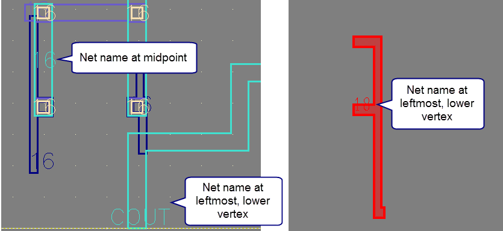

Displaying Net and Object Names with Highlight
You can display
the net, device, instance, or port name as text attached to each
highlight polygon. This is useful when highlighting multiple nets,
because the net name is attached to each polygon on the net. This
option is available in Calibre RVE for LVS, PERC, and PEX.
Prerequisites
A results database from a Calibre nmLVS, Calibre PERC, or PEX run open in Calibre RVE.
The layout database for your run.
A layout viewer with an interface to Calibre RVE. See “Connection to a Design Tool”.
Procedure
- Click the Options button
(
 ) to open the Options tab.
) to open the Options tab. - Choose the Highlighting category.
- Expand the LVS/PERC/PEX Highlighting section.
- Enable “Display connectivity object name in highlight polygons.”
- Click Apply.
- Highlight a net, device, instance, or port.
Results
The name of the object is added to each highlight polygon. For simple rectangles, the text is written at the midpoint. For other polygons, the text is written at lower-left most vertex, with left taking precedence over lower. This is illustrated in the Figure 1.
Figure 1. Label Highlight with Net or Object Name
